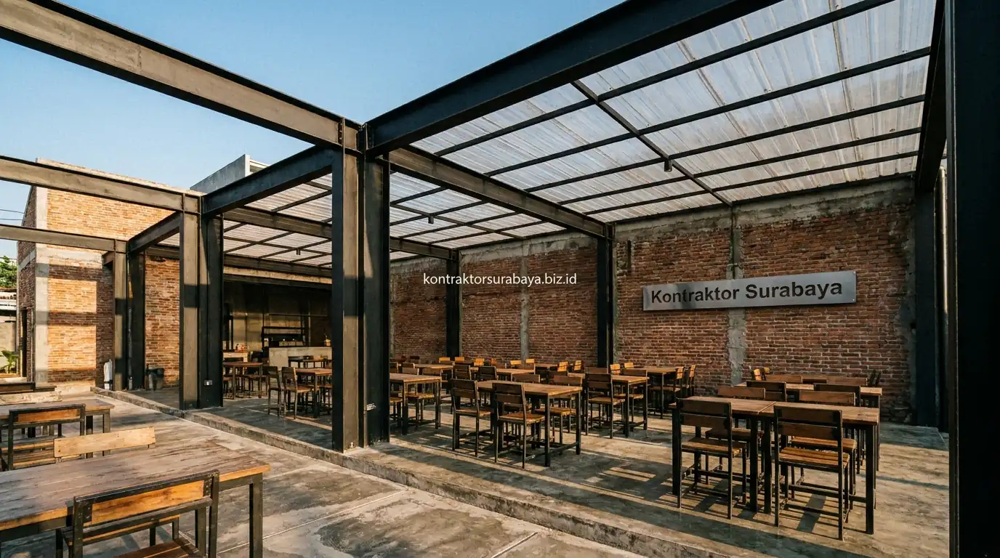

KontraktorKonstruksi Cafe Outdoor Industrial Hemat Biaya Gresik
Strategi konstruksi cafe outdoor bergaya industrial yang kokoh dan hemat biaya di Gresik. Struktur baja ringan, lantai semen poles, dan atap efisien.
 Erlang Sinatrya
Erlang Sinatrya